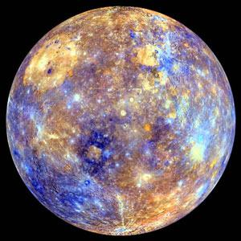

Like the waistband of a couch potato in midlife, the orbits of planets in our solar system are expanding. It happens because the Sun’s gravitational grip gradually weakens as our star ages and loses mass. Recently, a team of NASA and MIT scientists indirectly measured the Sun’s mass loss and other solar parameters by looking at changes in Mercury’s orbit.
The smallest planet in our solar system and nearest to the Sun, Mercury is only slightly larger than Earth's moon. From the surface of Mercury, the Sun would appear more than three times as large as it does when viewed from Earth, and the sunlight would be as much as 11 times brighter.
Despite its proximity to the Sun, Mercury is not the hottest planet in our solar system—that title belongs to nearby Venus—but it is the fastest, zipping around the Sun every 88 Earth days.